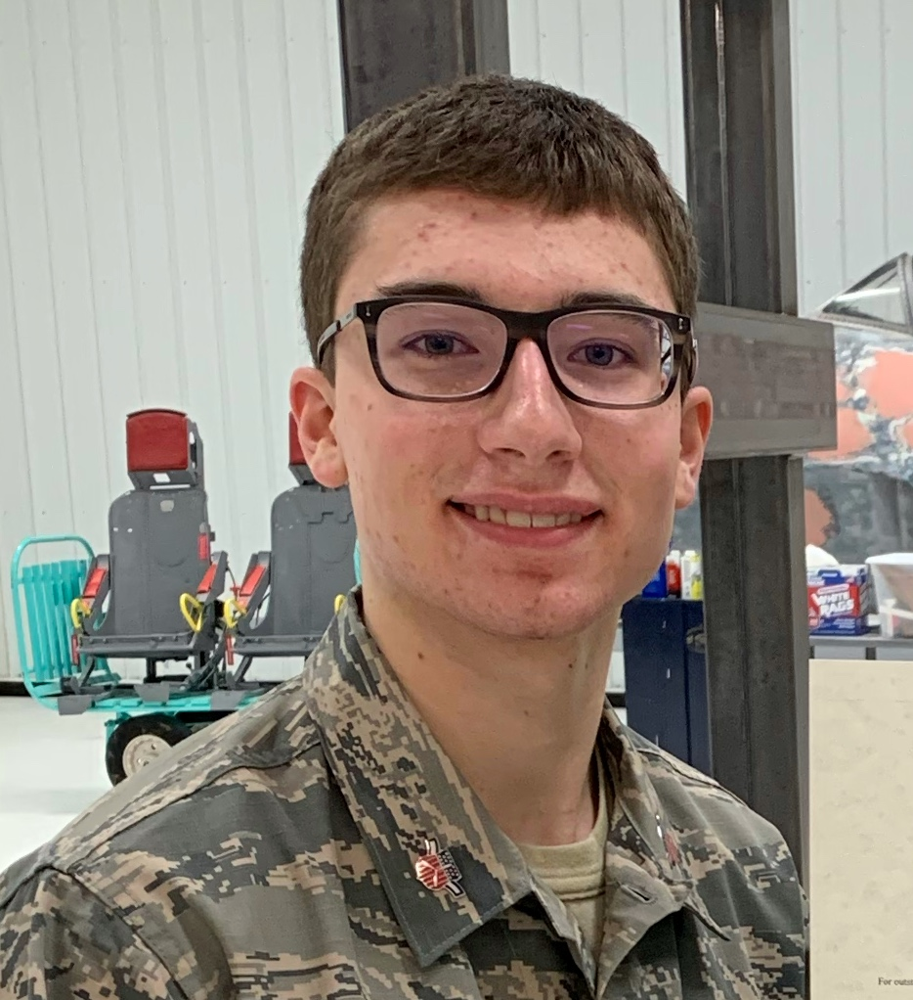

Home
Portfolio
Classes
About Me!
Christopher A. Sorensen

Age:17 Grade:12
Interests:
Civil Air Patrol: I have been a member of Civil Air Patrol since November of 2019. This organization has opened my doors to the style of the Air Force and has instructed me in many areas such as leadership, aerospace engineering, and personal health. It is definitely my plan to stay a member of this group as long as I can!
World War II airplanes: It has been my interest for many years to study and learn about the aviation machines of World War II. I love the stories of those who flew them, I love the history of their careers, and I love the machines themselves. This love is what inspires my future career plans.
Video games: I love gaming on mobile devices. My favorite game would be Gunship Sequel:WWII which allows me to fly WWII aircraft in a game and compete against many players. I also lead a 300+ member group within the game itself!
Favorites:
Music: Pop Genre, specifically artists like Kelly Clarkson, Phinneas, and Imagine Dragons
Movie: Action series, specifically Marvel, Mission Impossible, and Lord of the Rings
Books: Tom Clancy novel series
Future Plans:
My goal is to go to college and get a degree in Aerospace Engineering. I would like to design military aircraft some day. I may do this either by joining the Air Force or by working for a company that produces these aircraft.